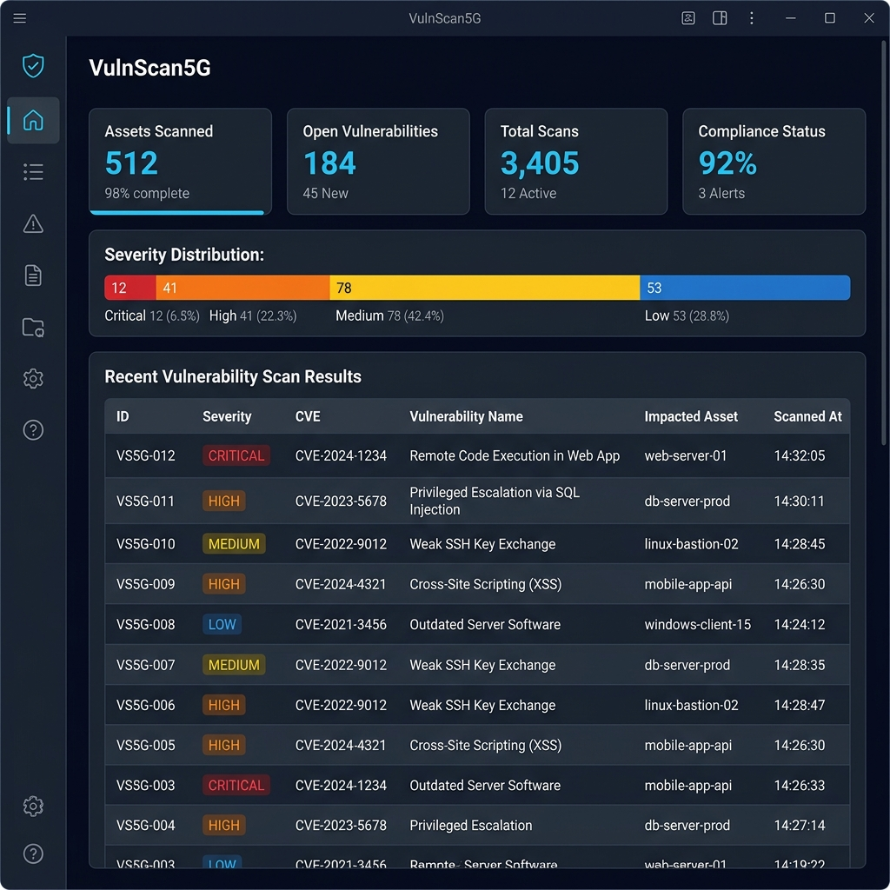

Detect buffer overflows, format string attacks, command injections, and 20+ vulnerability classes in C/C++ codebases. Powered by three analysis engines and local LLM reasoning.

Everything you need to find, understand, and fix vulnerabilities in C/C++ code — from quick scans to AI-assisted remediation.
Regex pattern matching, pycparser AST analysis, and tree-sitter parsing work together to minimize false negatives across C and C++ code.
Optional local AI reasoning via Ollama confirms or rejects findings, explains vulnerabilities in context, and generates targeted code fixes.
One-click fix generation produces patched source files. Review diffs side-by-side and apply fixes selectively or in bulk.
Purpose-built for the vulnerability classes that matter most in 5G infrastructure — buffer overflows, race conditions, command injection, and more.
Export findings as interactive HTML dashboards or structured JSON. Filter by severity, search across rules, and share results with your team.
All analysis runs locally on your machine. Source code never leaves your environment — no cloud uploads, no external APIs required.
Comprehensive coverage of the most critical vulnerability classes found in C and C++ codebases.
gets(), strcpy(), sprintf(), scanf %s, memcpy with variable sizes
system(), popen() with user-controlled input
printf(var), fprintf(f, var) with non-literal format strings
free() without NULL assignment, double free detection
malloc(a * b), realloc(p, n + m) without overflow checks
access() then open(), TOCTOU pattern detection
Unchecked malloc(), realloc() return values
malloc in loops without corresponding free
From file discovery to remediation — each stage is designed for accuracy and speed.
Discover .c, .cpp, .h, .hpp files recursively
Strip comments, normalize whitespace
Regex + AST + tree-sitter scanning
Deduplicate, assign CWEs, score
LLM confirms or rejects findings
Generate patches automatically
Console, JSON, or HTML output
Free and open source. Install on Windows and start scanning in under a minute.